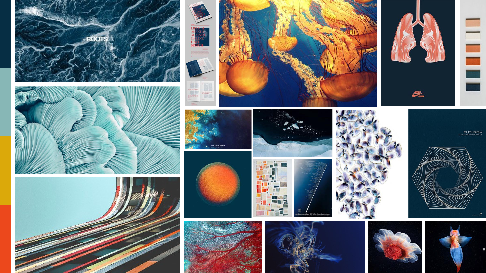
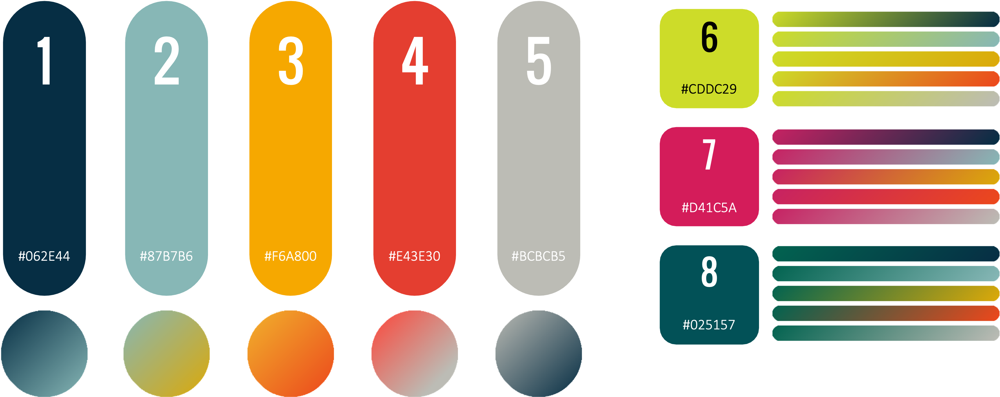
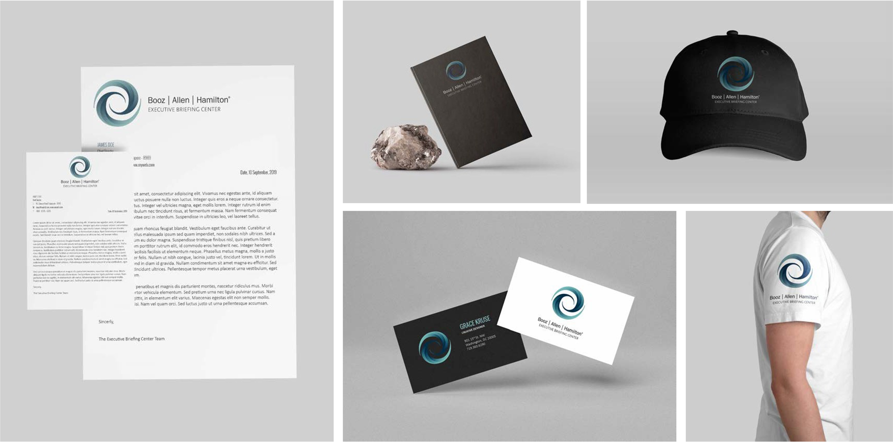
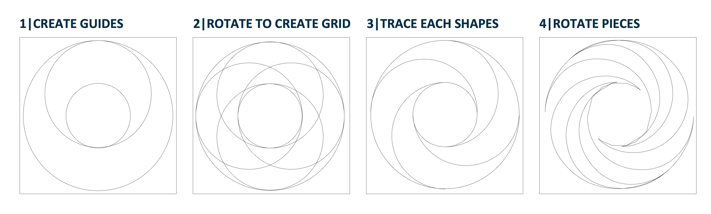

The creative inspiration was the idea of biomimicry since nature is the ultimate problem solver. We wanted to position ourselves as a company that will timelessly solve audacious challenges to support the government. When creating the visual identity guide, I wanted to create something that could be used by designers along with the many non-designers creating content in the space.

I've always been inspired by how educational some visual identity guides can be and wanted that to be a core element. In addition to including mini design lessons, I also included tips, tricks and directions for creating more complicated work in Microsoft PowerPoint since that was the primary design tool used by the Helix team. See the full document here.

The goal of the Helix is to showcase Booz Allen's ability to adapt their processes to solve audacious challenges in the government. Each color in the palette has a purpose. Some build trust, others excitement, with the combination them creating striking contrast that represents our ability to develop technical solutions while keeping a very human mission at the core. The team worked to stay within the bounds of Booz Allen's standard branding guidelines and deviated where necessary to get the desired effects.


The Helix logo is a dichotomy of an organic shape while following a system to create the initial form. Each piece in the smooth spiral, draws you into the center. Similarly, when working with our clients and community, we start from a world of possibilities and bring focus to the center of their needs and work to solve their problems with our technology, ecosystem, people, and values.